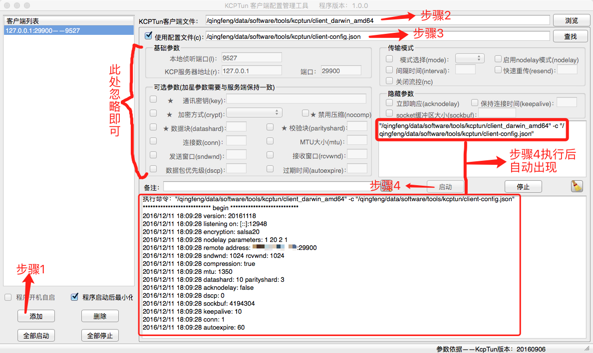

双11的时候买了个搬瓦工的VPS来翻墙，当然是最便宜的了，折腾了一个月，只想说一分价钱一份货，今天已经不想使用它了，然后买了一个月的LoCoVPN，主要是因为试用的感觉不错，😄
本来想要列举一下折腾了哪些地方，后来发现原来全部是在想着怎么为VPS加速。。。主要折腾的就是net-speeder、FinalSpeed、xSocks、Kcptun，以下就来列举一下我在使用这些软件过程中的感悟：
net-speeder
教程：安装net-speeder工具加速VPS主机及体验实际的速度性能
优缺点：提高下载速度、降低上传速度、消耗双倍流量、可能被封号；
FinalSpeed
教程：黑科技，效果逆天！使用FinalSpeed给搬瓦工(Bandwagonhost)加速！
优缺点：客户端和服务端都需要装软件，麻烦；
xSocks
PS：其实就是FinalSpeed，2016.05.30 官方停止了Finalspeed的维护，并推荐使用xsocks。
优缺点：客户端和服务端都需要装软件，要收费，80/年，具体看官网；
Kcptun
教程：小内存福音，Kcptun Shadowsocks加速方案
优缺点：客户端和服务端都需要装软件，麻烦，双倍流量，不过教程中的作者为我们贡献了集成工具，大大的减轻了我们的负担，但是我觉得我还是有必要稍微阐述一下，免得跟我一样，第一次使用的时候看不懂教程。
KCP协议简述
官方介绍：KCP - A Fast and Reliable ARQ Protocol
重点：
- KCP是一个快速可靠协议，能以比 TCP浪费10%-20%的带宽的代价，换取平均延迟降低 30%-40%，且最大延迟降低三倍的传输效果。纯算法实现，并不负责底层协议（如UDP）的收发，需要使用者自己定义下层数据包的发送方式，以 callback的方式提供给 KCP。
- TCP是为流量设计的（每秒内可以传输多少KB的数据），讲究的是充分利用带宽。而 KCP是为流速设计的（单个数据包从一端发送到一端需要多少时间），以10%-20%带宽浪费的代价换取了比 TCP快30%-40%的传输速度。TCP信道是一条流速很慢，但每秒流量很大的大运河，而KCP是水流湍急的小激流。
Kcptun教程简述
一开始，我本着DIY的心理，没有使用作者的一键安装脚本，然后顺着作者的教程看下去，总感觉缺胳膊少腿，各种懵逼，在此我劝大家一句，在自己不懂的时候，还是由简入繁为好！
额，在此之前像大家推荐一个软件：SecureCRT 一款终端仿真程序，向大家推荐这款软件的目的不是为了推销，而是为了在之后的概述中方便操作，至于它是干什么的，百度下就知道了。
首先在VPS服务器上安装系统和Shadowsocks，一键安装即可，接着使用SecureCRT连接你自己的VPS服务器，然后按照教程安装，根据教程，运行到./kcptun.sh这条命令的时候，会让你配置一大堆东西，个人感觉作者没有写全，所以，如果你不明白不确定的话，使用默认配置即可，不要瞎搞！最后记得自己拷贝一份服务端配置成功的输出信息：例如：
|
|
服务端的安装使用，根据教程还是比较顺利的，但是客户端，可能是因为我是用Mac的缘故，踩了一些坑，个人感觉作者写文章的时候是以Windows为主的，所以对于Windows，我就不说了，下面就Mac进行阐述。
首先下载跟服务端输出信息中的Kcptun版本相同的客户端程序，可以在这里查找。必须要保证Kcptun的客户端程序和服务端程序版本号一致，接着将服务端输出信息中的客户端配置保证到client-config.json文件中，然后下载安装客户端软件kcptun_xclient，在左下角添加一个客户端，并在右上角配置Kcptun客户端文件路径和配置文件路径，最后点击启动按钮即可使用，如下图所示：
总结
虽然使用这些软件可以为VPS加速，还算显著，但是如果你买的VPS本来就便宜的话，我只想说：一分价钱一份货。比如我自己：买了最便宜的搬瓦工VPS，50M的网，用Kcptun加速，浏览网页是（这）不（不）成（是）问（废）题（话），看Youtube视频有时候1080P也能看，有时候144P都卡。。。下载速度提升了两倍[/捂脸]，其实不过是从20KB/s提升到了60KB/s而已。。。
LoCoVPN使用两小时感觉
官网：LoCo加速器
我买的是标准套餐，15元/月，用的是日本的线路，目前感觉：
- 浏览网页比之前使用加速过的VPS还要快一点；
- 看YouTube视频能达到套餐中的最高点480P；
- 稳定性还不确定，出现过一次，网页突然加载不出来的情况，通过断开重连解决；
有个大问题：使用VPN过程中无法在Mac上的QQ客户端中向我的手机传输QQ截图，还有无法播放网页版的网易云音乐，通过断开连接解决，尚未咨询客服；原来是全局代理的原因。。。已问客服，无法解决，坑，巨坑！！！
继续使用中。。。